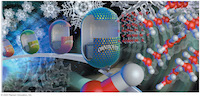
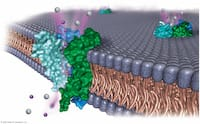
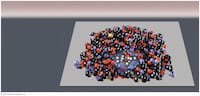

Chapter 1 (Matter, Measurement, and Problem Solving)

Lecture 1, Monday, August 26th, 2019
Lecture 2, Wednesday, August 28th, 2019
Lecture 3, Friday, August 30th, 2019
Lecture 4, Wednesday, September 4, 2019
Chapter 1 resources:
LibreText chapter 1
Youtube resources:
- Measurement & Sig Figs
- Conversions using dimensional analysis
Chapter 2 (Atoms and Elements)
Lecture 4, Wednesday, September 4, 2019
Lecture 5, Friday, September 6, 2019
Lecture 6, Monday, September 9, 2019
Lecture 7, Wednesday, September 11, 2019
Chapter 2 resources:
LibreText chapter 2
Khan Academy:
- atomic mass calculation
- moles and Avogadro's number
- isotopes and counting protons, neutrons, and electrons
Youtube resources:
- History of atomic theory
- Isotopes, symbols, p/n/e
Chapter 3 (Molecules and Compounds)

Lecture 7, Wednesday, September 11, 2019
Lecture 8, Friday, September 13, 2019
Lecture 9, Monday, September 16, 2019
Lecture 10, Wednesday, September 18, 2019
Chapter 3 resources:
LibreText chapter 3
Khan Academy:
- Naming ions and ionic compounds
- Empirical, molecular, and structural formulas
Youtube resources:
- Naming ionic compounds
- Naming hydrates
- Naming molecular compounds
- Writing formulas with polyatomic ions
Chapter 4 (Chemical Reactions and Chemical Quantities)

Lecture 10, Wednesday, September 18, 2019
Lecture 11, Friday, September 20, 2019
Lecture 12, Monday, September 23, 2019
Chapter 4 resources:
LibreText chapter 4
Khan Academy:
- Balancing chemical equations
- Stoichiometry (g <> mol <> g)
- Limiting reagents
Youtube resources:
- Balancing equations
- The mole in stoichiometry
- Limiting reagents & percent yield
Chapter 5 (Introduction to Solutions and Aqueous Reactions)
Lecture 13, Wednesday, September 25, 2019
Lecture 14, Friday, September 27, 2019
Lecture 15, Monday, September 30, 2019
Lecture 16, Wednesday, October 2, 2019
Lecture 17, Monday, October 7, 2019
Lecture 18, Wednesday, October 9, 2019
Lecture 19, Friday, October 11, 2019
Chapter 5 resources:
LibreText chapter 5
Khan Academy:
- Molarity
- Double replacement reactions
Youtube resources:
- Dilution calculations
- Net ionic equations
Chapter 6 (Gases)

Lecture 19, Friday, October 11, 2019
Lecture 20, Monday, October 14, 2019
Lecture 21, Wednesday, October 16, 2019
Lecture 22, Friday, October 18, 2019
Lecture 23, Monday, October 21, 2019
Chapter 6 resources:
LibreText chapter 6
Chapter 7 (Thermochemistry)
Lecture 23, Monday, October 21, 2019
Lecture 24, Wednesday, October 23, 2019
Lecture 25, Friday, October 25, 2019
Lecture 26, Monday, October 28, 2019
Chapter 7 resources:
LibreText chapter 7
Chapter 8 (The Quantum-Mechanical Model of the Atom)
Lecture 26, Monday, October 28, 2019
Lecture 27, Wednesday, October 30, 2019
Lecture 28, Friday, November 1, 2019
Lecture 29, Monday, November 4, 2019
Lecture 30, Wednesday, November 6, 2019
Lecture 31, Friday, November 8, 2019
Chapter 8 resources:
LibreText chapter 8
Chapter 9 (Periodic Properties of the Elements)

Lecture 31, Friday, November 8, 2019
Lecture 32, Wednesday, November 13, 2019
Lecture 33, Friday, November 15, 2019
Lecture 34, Monday, November 18, 2019
Chapter 9 resources:
LibreText chapter 9
Chapter 10 (Chemical Bonding I: The Lewis Model)

Earlier material was lectured in lab
Lecture 36, Friday, November 22, 2019
Chapter 10 resources:
LibreText chapter 10
Chapter 11 (Chemical Bonding II: Molecular Shapes, Valence Bond Theory, and Molecular Orbital Theory)

Lecture 35, Wednesday, November 20, 2019
Lecture 36, Friday, November 22, 2019
Lecture 37, Monday, November 25, 2019
Lecture 38, Monday, December 2, 2019
Lecture 39, Wednesday, December 4, 2019
Chapter 11 resources:
LibreText chapter 11